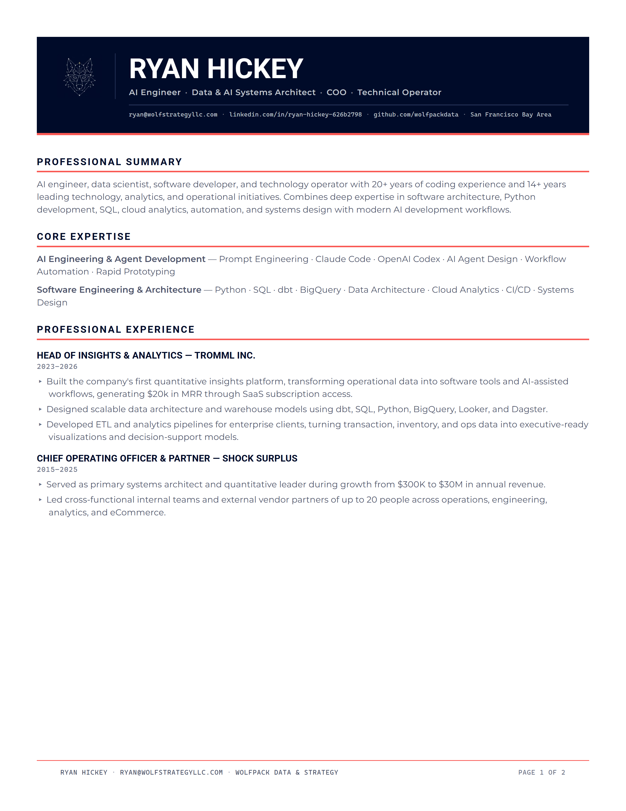
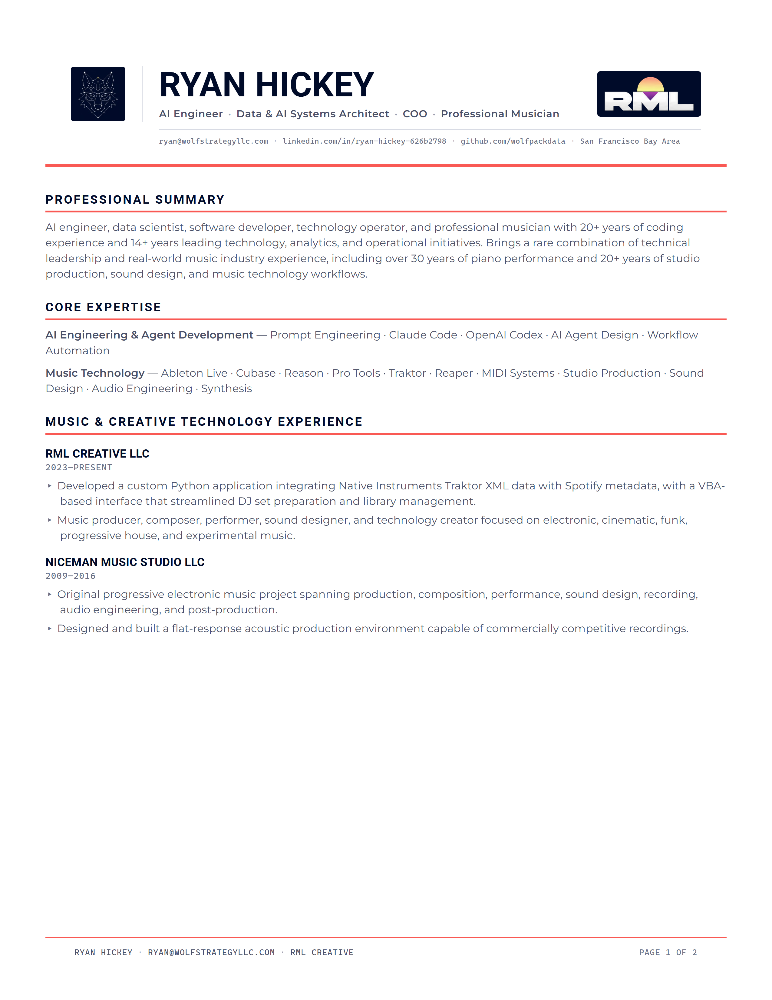

Live renders of every artboard in templates/export/. These
are the same files export-png.ps1 turns into the 300 DPI PNGs in
preview/. Shown here at 1× (96 DPI) — judge composition and
hierarchy here, judge print sharpness from the PNGs.
The RML sun is the only third color family anywhere in the system. It is allowed here because it is a mark, not a decision — and it never shares an artboard with a coral fill.
Both marks become navy chips on white — the wolf because its PNG has no alpha, the RML because its letterforms are white. Made deliberate with a matching 3px radius so they read as a pair.
Ship the footer as native Word text whenever the résumé
runs past one page — the page number has to be a live field. Recipe in
header-footer-spec.md §7.


Review artifacts only. The body copy is filler at plausible sizes so line lengths are honest — it is not a résumé body template.
Extracted from eng_music_combo/…docx. 7.5 × 2.09in
— over a fifth of the page. Its yellow-green (#DADA60) and near-black
(#07080B) appear nowhere on wolfstrategyllc.com; the new system replaces them
with navy and coral.